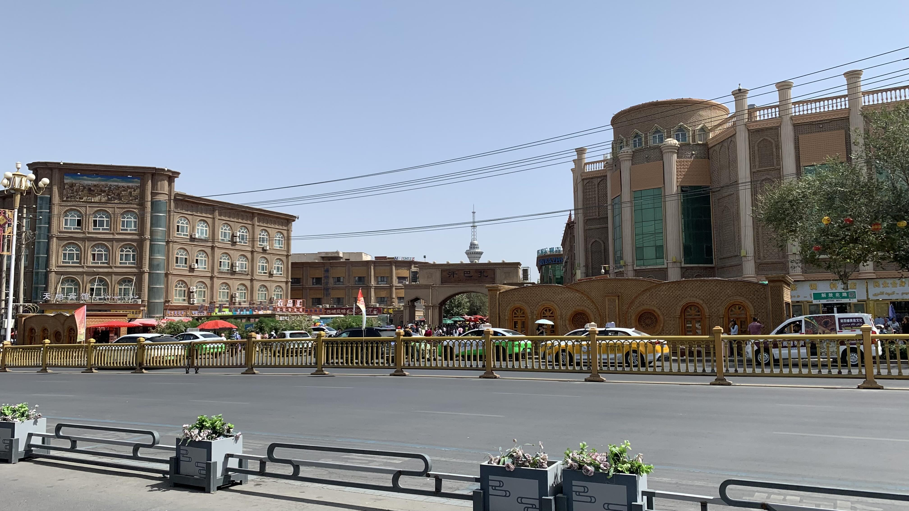
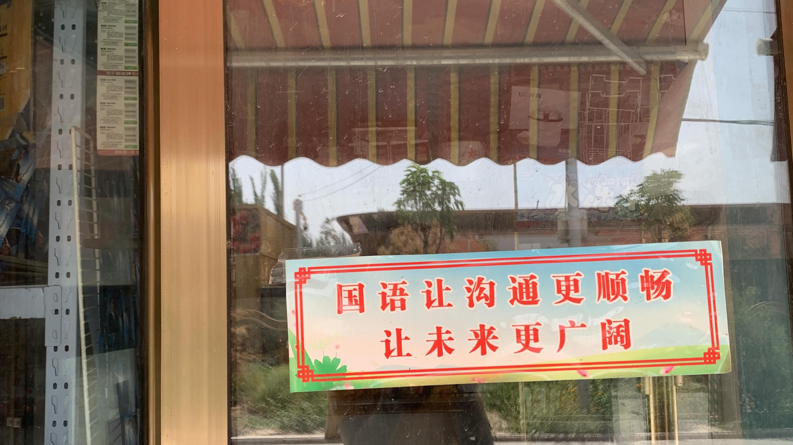
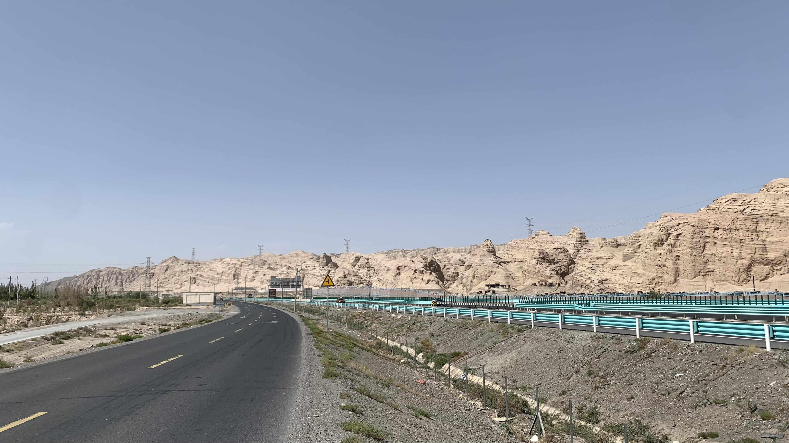
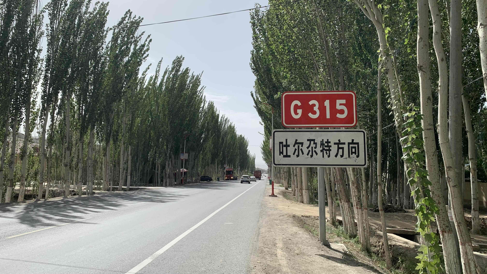
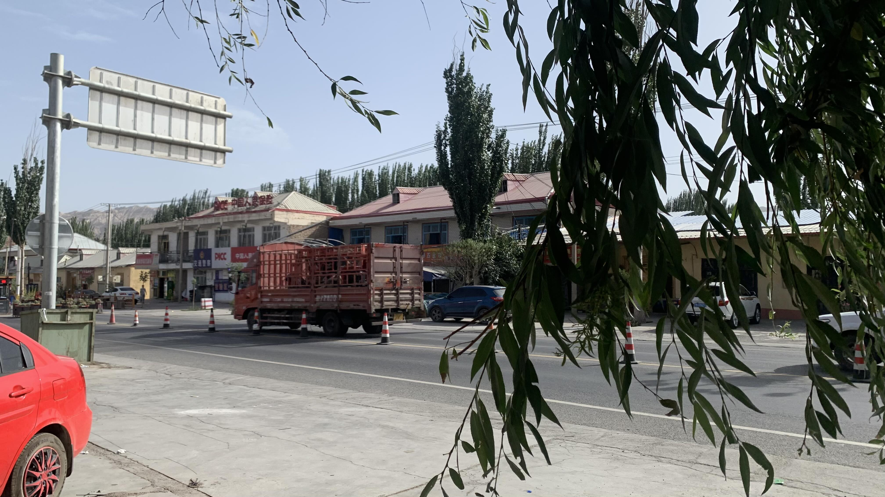
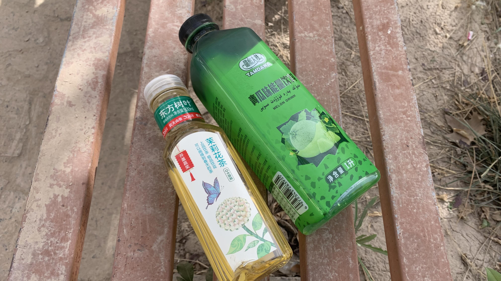
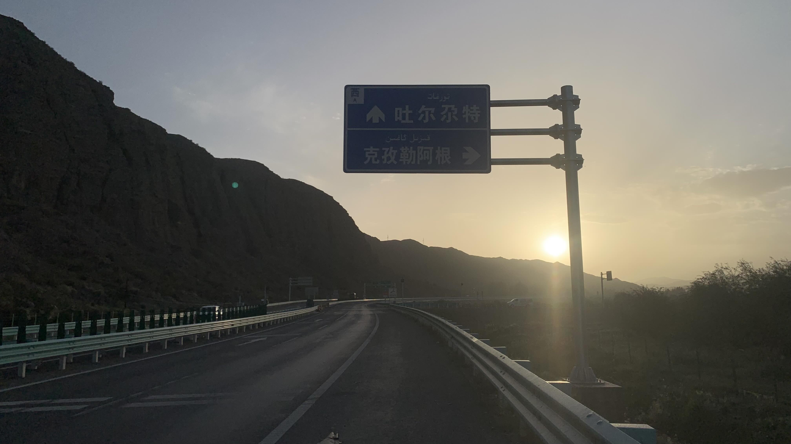
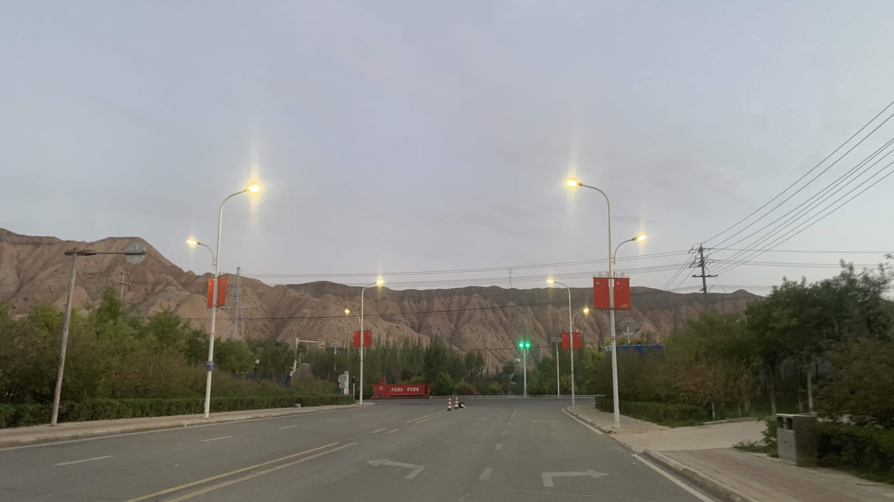
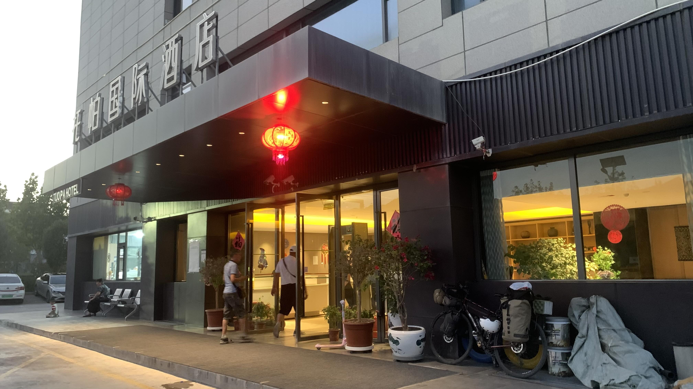
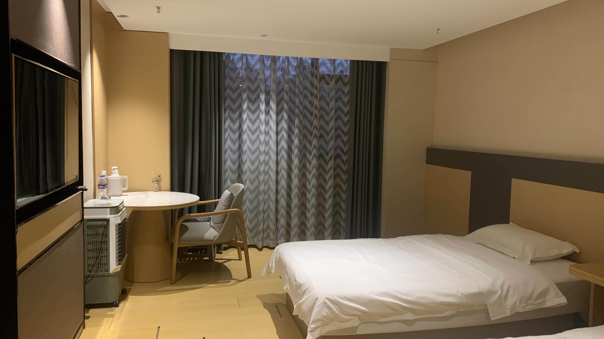

k-Day 178｜終於終於終於，要離開新疆了！
終於終於終於，要離開新疆了！

回頭看看喀什最後一眼，很漂亮嗎？都和我無關了！
今天只有一件事：騎到托帕找間住宿，再憑直覺決定，究竟要往北走吐爾尕特口岸，還是往西騎到伊爾克什坦。

在路邊鎮上的超市看到這張國語貼紙，上面寫著：「國語讓溝通更順暢 讓未來更廣闊」
實在很適合作為口岸前歡送遊客的標語之一。

地貌上沒啥改變，仍然是發燙的柏油和黃土千層。

看到吐爾尕特方向路牌，雖然出境路線較短，但沿途似乎沒啥村鎮。

天氣還是很熱，每隔五到十公里就找個樹蔭躲太陽。
大概是接近口岸的緣故，被路上警察攔下後，對方都會慎重地把我的護照拿去登記。

一整天走走停停，沿途補充液體。在南疆的路上看到好多瓜汁飲料，終於忍不住買了一瓶。綠色素加上化學瓜味，倒不是針對某種實際存在的瓜種，還原的是吃瓜時的清涼氣息。喝兩口就倒在土裡給螞蟻品嚐。

從喀什到口岸一路緩上坡，加上逆風，速度拉不上來，看到地標路牌時已經傍晚了。

天黑前抵達口岸城鎮托帕，進城前又被警察攔下一次。每次問的都是一樣的問題。

依照今天被盤查的次數，這裡顯然不是適合隨便找地方露營的地方。雖然路上有免費營地的招牌，根據過去一個月的經驗，還是找間酒店安靜睡覺，才好應付未來幾天的翻山越嶺。

內裝乍看高級，實則沒有空調，只能開窗讓蚊子飛進來。沒有熱水，前台一開始堅持熱水不歸他管。在我幾次詢問下，他上樓摸著浴室水龍頭流出的冷水，跟我說：「這是熱水了，現在是夏天嘛！」
要不要聽聽看你在說什麼？
今日花費：住宿 150 元